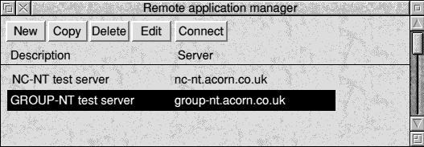

CONFIDENTIAL
| Document ref: | 1315,500/FS |
| Project: | ICA-3 (834) |
| Revision: | Issue E |
| Date: | 25the March 1998 |
| Author(s): | Martin Neville-Smith, Simon Middleton |
| Change: | *** LIVE *** |
| Classification: | Acorn Confidential |
| 1.0 | Overview |
| 2.0 | Outstanding issues |
| 3.0 | Technical background |
| 4.0 | User interface |
| 5.0 | Programmer interface |
| 6.0 | Data interchange |
| 7.0 | Data formats |
| 8.0 | External dependencies |
| 9.0 | Acceptance test |
| 10.0 | Non compliances |
| 11.0 | Development test strategy |
| 12.0 | Product organisation |
| 13.0 | Future enhancements |
| 14.0 | Glossary |
| 15.0 | References |
| 16.0 | History |
The wide acceptance of Microsoft applications across the whole spectrum of market areas has always presented a problem to Acorn, as many potential customers would like to have the ability to run such applications, even if this is not the prime reason to purchase a computer system. This ability now goes far beyond the traditional desktop machine, and is relevant to Network Computers, STBs and even small embedded systems. Market areas that have particular influence include the corporate network, distance workers, small office users, and as an additional service to TV Centric STB technology.
With the introduction of Windows 95 and Windows NT, Microsoft Windows is rapidly becoming the predominant 32-bit application platform. As I/S managers begin to introduce advanced Windows applications into the extended enterprise, they face the challenge of how to effectively deploy 32-bit applications beyond LAN-connected, PC users. This falls mainly into the domain of the NC, and presents a challenge.
The challenge is two-fold. First, users may be remote to the LAN, connecting into the corporate network through high-bandwidth WANs, over the Internet, or from low-bandwidth dial-up lines. The second challenge is to provide this service from low-cost platforms that appear to the user to have a responsiveness of an expensive desktop PC.
This is the area that Citrix have addressed with their WinFrame technology. This involves a network-centric, three-tiered application architecture. Under this model, the application execution and data storage occurs on a central server (or servers), and only a thin piece of client software is required at the client system. This uses universal, thin-client software in conjunction with an application server and a distributed Windows display protocol.
Citrix WinFrame is a multi-user Windows application server based on Windows NT under license from Microsoft that supports enterprise application deployment using a thin-client architecture. This network-centric approach includes universal, thin-client software that works in conjunction with WinFrame multi-user application server software. Enterprise applications execute on the WinFrame server and are accessed through thin-client software over dial-up, LAN, WAN and Internet connections. The thin-client architecture provides users with consistent, high-performance and universal access to any type of application, including DOS, Windows 16, Windows 32 and client/server programs, regardless of available bandwidth or client hardware. The multi-user application server design provides I/S managers with an economical and manageable way to deliver applications across the extended corporate network or public Internet.
The key to this thin-client architecture is a distributed Windows presentation protocol developed by Citrix, called ICA. This is a general-purpose presentation services protocol for Microsoft Windows. Conceptually, ICA is similar to the UNIX X-Windows protocol. ICA allows an application's logic to execute on a WinFrame multi-user Windows application server, located remotely. Only the user interface, keystrokes and mouse movement are transferred between the server and the client device over any network or communications protocol, resulting in minimal client resource consumption. ICA is designed to run over industry-standard network protocols, such as TCP/IP, NetBEUI, IPX/SPX, and PPP and industry-standard transport protocols, such as async, ISDN, Frame Relay and ATM.
The ICA protocol presents only the user interface from an executing machine on the display of another machine. ICA provides true location independence for Windows applications by running the Windows application at one location and executing the program's user interface somewhere else. This distributed Windows architecture allows Windows 16, Windows 32 and client/server applications to perform at very high speed over low bandwidth connections. It also allows 16- and 32-bit applications to run on legacy PCs, old and existing Acorn computers as well as STB and NC platforms.
Citrix has come into partnership with Acorn to provide a full end-to-end solution, and Acorn have agreed to supply the ICA client software into all appropriate platforms in the future.
The ICA protocol is designed to provide high-performance Windows display over low-bandwidth connections, to run over any common transport mechanism, and to require minimal client resources. ICA is a robust and extensible protocol that includes protocol definitions for the following capabilities:
The ICA protocol is defined in the Citrix confidential specification Intelligent Console Architecture[5]. This document and the accompanying virtual driver specifications only define the protocols as implemented in the WinFrame 1.6 server release. Therefore the definitive specification is the source code provided by Citrix[6].
ICA is the physical line protocol used for communication between the client machine and the Citrix WinFrame application server. Thinwire is the name of the data protocol that exports the application's graphical screen image. Thinwire is a logical datastream that flows encapsulated in an ICA packet. Thinwire is not a physical protocol. The physical protocol, ICA, must guarantee the delivery of the thinwire datastream with no errors and no missing or out-of-sequence data.
From the perspective of the WinFrame application server, the major portion of the thinwire component is part of the GDI and video driver subsystem. This thinwire component, in conjunction with key elements in the WinFrame Win32 subsystem, generates highly optimized drawing primitives called the thinwire protocol.
The output of the thinwire protocol driver is a logical datastream that is sent back up a virtual channel API, which takes the datastream and encapsulates it into an ICA packet. Once the ICA packet is formed, it optionally passes through a series of protocol drivers to add functionality like encryption, compression and framing. It is then put on the transport layer and sent to the client. Once at the ICA client, the data packet passes through the same layers in opposite order, resulting in the graphical display of the remote application user interface on the client.
ICA packets consist of a required one-byte command, followed by optional data. This packet can be prefixed by optional preambles, negotiated at connection time, to manage the transmission of the packet. The nature of the transmission medium (LAN vs Async) and user defined options (e.g. compression) influence the total packet definition.
All ICA commands have the following format:
| Frame Head | Reliable | Library | Encrypt | Compress Data | Command | Frame Tail |
|---|
Only Command is always present in the packet. The preambles and postambles depend on the transport and the negotiation that takes place during initialization. The presence of Command Data depends on the Command itself.
There are several different categories of ICA commands. These categories are discussed below along with implementation notes.
Control commands are a category of ICA command packets that manage the connection to the application server and the relationship to the local client user interface. This category of commands includes:
Full-screen Text is a category of ICA command packets which allow the application server to control the local client display in a full-screen text mode.
These commands are rarely used for Windows applications. However, they are important for the support of very low-end devices and are encountered if a user runs a full-screen DOS session from within Windows. These commands involve less data transfer, and thus, higher display per performance. Packets are sent from the server to perform the following:
This is implemented by :-
PC scan codes are transmitted from the client to the server application. An ICA command packet can contain multiple scan codes.
The RISC OS keyboard API only provides key down information with ASCII or internal key values. To allow key up and down events to be generated with the correct PS/2 scan code values the KeyWatch module, originally written for the NC100 project [1], is extended to provide this extra information. This work is detailed in its own specification [2].
Each key on the keyboard is sent in its PS/2 scan code form. The interpretation of the keys is performed by the server.
No specific mechanism is provided within the client to enter keys not on the keyboard (eg Windows key). However since the PS/2 codes are reverse mapped from the Acorn internal key numbers then any mechanisms used to provide extra keys (eg by use of Fn keys on IR and portable keyboards) also provide these keys to the WinFrame server.
The keyboard layout in use is sent to the server on connection. This can be according to the user profile on the server or as specified. By default the RISC OS client will identify the keyboard layout from the configured Keyboard setting and send the appropriate code. This can be overridden by editing the ini file by hand.
The ICA command set includes commands to input the position of the mouse using normalized coordinates. These commands can also track the mouse button status.
The mouse status is polled in the main client poll loop and changes in state are transmitted to the server. A configuration entry MouseTimer limits how often movement only commands are sent.
The protocol supports up to 3 buttons.
The ICA protocol provides multiplexed management of multiple virtual channels. A virtual channel is a session-oriented transmission connection that can be used by application layer code. Virtual channels are used to add functional enhancements to the client, independently of the ICA protocol itself. There is a set of ICA Virtual Channel commands that are used to send and receive this ICA protocol independent data.
Thinwire protocol is an ICA virtual channel protocol used to transmit presentation commands from Windows applications running on the application server to the client. The Thinwire protocol is highly tuned for transmission of Windows object display over low-bandwidth connections. This is accomplished through:
Rendering of the Thinwire graphics commands is accomplished by the use of a library implementing a subset of the Windows GDI calls. These are called by the Thinwire driver to write to the screen. Certain portions of the thinwire driver are rewritten to provide better speed and more efficient use of resources with the RISC OS back end.
Persistent caching is configurable. The default location for
the cache is in <Wimp$ScrapDir>.ICAClient.Cache.
ICA includes a virtual channel protocol to transmit printer data to a client.
Printer selection is performed under RISC OS. Whichever printer is selected as being active when the session is started is the one that is used from within the session.
There are in fact two printer protocols in use at any time. One primarily for use from DOS, one from Windows. Both are supported by the RISC OS client. For the DOS client the selected printer appears to be on the clients LPT0: port. For the Windows client then the printer appears by name in the Client Network as normal.
A file provided within the client maps from known Acorn printer driver names to the equivalent Windows printer driver name. This allows the virtual driver to automatically set up the correct printer for the session. If the printer configured under RISC OS isn't listed in this file then it is the users responsibility to correctly set up the printer in Windows. If the correct printer driver is not selected then this will result in incorrect output as would normally happen with an incorrectly configured printer.
This auto-mapping is only available when all of the following are true.
An alternative way of specifying the Windows driver to use is via the ini files. The following option can be added to the server portion of an ICA file or WFClient.ini to set the driver.
WindowsPrinter=windows driver name
ICA includes a virtual channel protocol to transmit file system functions between the WinFrame server and the client.
The file systems and drives that are exported are defined in the INI files for security.
The WFClient section supports the following extra commands.
DrivePath1=RISC OS path
DrivePathEnabled1=[yes|no]
DrivePathWriteAccess1=[yes|no]
As many groups of these can be given as is necessary as long as they are contiguous.
The RISC OS path is in one of the the following forms.
filing system::drive.$.directory path
filing system::drive
filing system
The following filing systems support this option
ICA includes a virtual channel protocol to provide full duplex access to the client's serial ports from server applications and spooler.
This is not supported under RISC OS in release 1.
ICA includes a virtual channel protocol to provide Windows clipboard support, allowing users to cut and paste between server and client applications.
This is not supported under RISC OS in release 1.
ICA 3.5 will include a virtual channel protocol to allow audio generated on the server to be played on the client. This will be supported in future releases.
Beneath the ICA data packets, there are several optional protocol driver layers. ICA does not depend on these layers. Their existence and use is negotiated during the ICA handshaking that occurs at the start of a session. Since these layers sit below ICA, they can be removed or replaced. Additional protocol drivers can also be added. A wide range of supplied protocol modules allow ICA to work with all of the most prevalent transport technologies, such as TCP/IP, NetBIOS, IPX/SPX, and PPP/SLIP, supplying ICA true protocol independence.
The ICA protocol stack is dynamically configured to meet the needs of each transport protocol. For example, IPX is not reliable, so a reliable protocol driver is added above the IPX transport driver. However, since IPX is a frame-based protocol, a frame driver is not included in this particular ICA protocol stack. TCP, however, is a stream protocol; in this case, a frame driver is included. TCP is reliable, however, so this driver is not added to the stack.
The following diagram illustrates the ICA protocol stack and transport:
The source to this driver is not included in the source distribution from Citrix so this functionality is not available in the RISC OS client.
The RISC OS client supports the basic encryption mechanism. Citrix make available a Secure ICA pack which implements better security using RSA cryptography. This is not available to us due to US Export controls.
As the RISC OS client is only implemented over TCP/IP this protocol driver is not necessary and so is not included.
The RISC OS client incorporates the RFrame protocol driver which provides framing for reliable transports (eg TCP/IP).
These are not supported by the RISC OS client as it is assumed that an external dialler has responsibility for bringing a TCP/IP connection up.
ICA is a flexible and extensible protocol. First, the protocol is designed to accommodate varying degrees of client capability. During handshaking, the ICA client communicates such information as screen resolution, color depth, cache size, among other things. The protocol then adjusts to this information. This communication allows for a wide variety of ICA clients, ranging from fixed-function monochrome terminals to high-end workstations.
Through its virtual channel architecture, ICA can be extended to include new data types, such as sound and video (sound in ICA 3.0 encompasses only the system beep, video is supported only when performed entirely through the standard Windows graphical display interface). Virtual channels can also be used to support auxiliary client devices, such as badge readers, wands and scanners.
Finally, the very modular design of the ICA protocol allows the supporting layers below it to be expanded. For example, the existing encryption layer could be augmented with RSA or DES encryption. Converters, such as an ICA to X.11, can be added in. And new transport protocols such as ATM can easily be supported.
The RISC OS client is composed of one linked application, thus extending it with new virtual drivers or protocol modules requires compilation of a new application. They cannot be added at run-time as is possible with the Windows implementation. The extensibility model of the original source code is maintained however to ease adding new drivers.
There are three ways of launching the ICA client.
Any of these will cause the client to load and the splash screen to be displayed.
The client, when loaded, first ensures that a splash screen, conforming to Citrix's specification, is displayed to the user.
This is described in detail in the Citrix Agreement, Exhibit D. The Splash screen is displayed for a minimum of two seconds.
After the splash screen has been removed the client continues in one of two ways depending on how it has been configured and launched.
An icon is installed on the iconbar from where a connection can be made or the configure application run. The loaded application also picks up when ICA files are run and starts a server session.
In this 'persistent' mode the client stays loaded until explicitly quit by the user. The user can switch in and out of a loaded session and its state is maintained whilst it is suspended.
This is the default behaviour when the client is run directly. In a non-desktop environment the client should be configured to go into persistent non-iconbar mode if suspension of sessions is necessary.
If the client is started by running an ICA file or by use of the ICA: URL pseudo-scheme with a server argument then it immediately opens the connection to the remote server and does not install itself on the iconbar. If the switch out function is used then it quits the client immediately.
In this mode it also doesn't ensure any toolbox modules (other than the Toolbox itself) are loaded thus possibly using less memory.
The icon bar icon has the following properties.
The icon bar menu has the following structure:-
ICAMgr$Dir is set or the file
ICAClient:!ICAMgr.!Run exists.
When a server is selected from the menu or via an ICA file the connection is started. The client does the following
A connection status box is opened when the connection process starts. This box gives some information about the status of the connection and offers a Cancel button that can be used to abort the transfer.
Once the handshaking is complete the client goes single-tasking and switches screen mode. From this point the user is within windows until they log out or switch out.
There are three display modes possible:-
This is the mode until a connection with the server is made. This enables error messages from the server to be displayed without any sophisticated protocol.
This is used if a DOS box is started and then full-screen mode selected from its preferences window.
This is the full graphical user interface.
When used on an NC on a TV the edges of the screen are lost due to the overscan mode used. A new command is added to the ini file that can be used in the connection section of an ICA or AppSrv file.
OverscanMode=[Yes|No]
Note that the ICA client cannot be used on a TV with a Model 1 NC or STB as no support for 16 bit screen modes is implemented. A suitable error message is displayed when session is started on these platforms.
Various errors are possible when initiating a connection. These all result in a standard RISC OS error box being displayed and the connection being aborted. Errors whilst in the Windows environment are in general ignored and an attempt to continue as best as possible is made.
The actual error messages are taken from the Citrix sources, modified where necessary to reflect the RISC OS environment.
All the user interface elements are provided by a toolbox Res file so suitable interactive help messages are embedded there as usual.
This is a separate application that edits the AppSrv and WFClient INI files of the client and can also be used to create standalone ICA files. It is a separate application to keep the executeable size down and so that it can easily be removed when the client is in use in a school environment.
The user interface is broadly the same as the equivalent Windows or Mac client.
The files are always read from
ICAClientINI:WFClient and
ICAClientINI:AppSrv. This gives the version of the
file in Choices if it exists or in the application if not.
The files are read when the manager starts. Any options set in the files which are not recognised or modified by the manager application are maintained when the file is saved.
Changes are automatically saved to the equivalent files within
<Choices$Write>.ICAClient.INI. If
<Choices$Write> is not set or is unwriteable then an error
is given.

This window shows the available connections.
Clicking with SELECT selects the entry under the pointer and deselects all others.
Clicking with ADJUST toggles the selected state of the the entry under the pointer.
Double-clicking with SELECT on an entry tries to connect to that server.
Double-clicking with ADJUST on an entry opens the Edit Entry window.
Double-clicking with ADJUST on no entry opens the New Entry window.
This window allows the user to set the parameters for this connection.
Whilst the Published application button is selected the Application and Working dir fields are faded.
Whilst either of the default buttons in the screen section are selected then the corresponding row of buttons is unselectable.
The 256 colour entry is unselectable if a fully programmable palette is not being used (ie on pre Risc PC hardware) and the 16 colour option is automatically chosen. Unavailable resolutions are unselectable and the next lowest size available is chosen instead.
Clicking on the popup menu button will bring up a list of available servers or published applications. This list is built by broadcasting on the network so there may be a delay of a few seconds before it opens. The application single-tasks until this operation is complete.
The following values in the connection section of AppSrv ini file are set from this window.
Address
InitialProgram
WorkDirectory
Username
Password
Domain
PersistentCacheEnabled
DesiredHRes
DesiredVRes
DesiredColor
This window allows the user to set the default screen size (unless overridden by connection information) and the disk cache location and parameters. It also allows them to clear the cache.
The 256 colour entry is unselectable if a fully programmable palette is not being used (ie on pre Risc PC hardware) and the 16 colour option is automatically chosen. Unavailable resolutions are unselectable and the next lowest size available is chosen instead.
The following values in the WFClient ini file are set from this window.
DesiredHRes
DesiredVRes
DesiredColor
PersistentCacheSize
PersistentCachePercent
PersistentCacheMinBitmap
PersistentCachePath
Note 'Copy' is used here to reinforce the fact that 'Save As' since the ICAMgr always edits the copies of the files in Choices unaffected by where copies of the files may have been saved out to.
Various options can be given on the command line to enable features as follows.
-f filename
-i
-o
-s
-u url [post file]
-
The following switches control debug output and may not do anything on release versions.
-d
-g
-l <logfile>
-r
The following system variables are set in the !Boot file so they are available before the client is run. They are also set identically in the !Run files.
ICAClient$Dir
ICAClient$Path
File$Type_AD0
Alias$@RunType_AD0
Alias$URLOpen_ICA
ica: URL pseudo-scheme.
The following system variables are set by the ICAMgr !Boot and !Run files.
ICAMgr$Dir
ICAMgr$Path
The following system variables can be overridden by the user. If they are set before the client is run then the given values are used rather than the client defaults.
ICAClientINI$Path
If Choices$Path exists then it Defaults to
Choices:ICAClient.INI., otherwise
to ICAClient:INI..
ICAClient$Options
Defaults to empty.
ICAClient$FileOptions
Defaults to empty.
ICAClient$NoFileOptions
Defaults to -i.
ICAClient$ClientName
ICAClient$Errors
Defaults to 2> null:.
The following system variables are referenced by the client but should never be set by it.
Inet$HostName
ICAClient$ClientName is not set.
Choices$Write
<Choices$Write>.ICAClient.INI rather than
into the application.
The ICA client broadcasts various messages when connecting/disconnecting etc to allow other tasks to provide suitable user feedback. It can also be controlled via messages so that all configuration and user interface details can be performed externally.
The format of the status messages is as follows
+0 = size
+12 = 0 (never a reply)
+16 = 0x50f80 (message_WINFRAME_STATUS)
+20 = reason
+24 = flags
They are all for information only.
+0 = 28 (message size)
+20 = 0 (winframe_STATUS_STARTING)
+24 = 0 (flags all reserved)
This message is broadcast when the client runs so that other tasks can record the task handle for future use if they wish.
+0 = 28 (message size)
+20 = 1 (winframe_STATUS_QUITTING)
+24 = 0 (flags all reserved)
This message is broadcast when the client is about to quit. Note that it will be dead by the time that any task receives the message.
+0 = 72 (message size)
+20 = 2 (winframe_STATUS_CONNECTED)
+24 = 0 (flags all reserved)
+28 = session handle
+32 = server description
This message is broadcast when the client has successfully connected to a WinFrame server.
The server description is as set in the [ApplicationServers] section of the ICA file, is null-terminated, and is a maximum of 40 characters (including terminator) long. If no description was available then the server host name is used, failing that a string version of the IP address.
Note in the current implementation this message may not be received by another task until the client suspends or disconnects.
+0 = 68 (message size)
+20 = 3 (winframe_STATUS_SUSPENDED)
+24 = 0 (flags all reserved)
+28 = session handle
This message is broadcast when the client is suspended by the user switching back to the RISC OS desktop environment.
+0 = 68 (message size)
+20 = 4 (winframe_STATUS_DISCONNECTED)
+24 = 0 (flags all reserved)
+28 = session handle
This message is broadcast when the client disconnects from the ICAClient server.
The format of the control messages is as follows
+0 = size
+12 = 0 (never a reply)
+16 = 0x50f81 (message_WINFRAME_CONTROL)
+20 = reason
+24 = flags
Any control message is immediately replied to with a CONTROL_ACK message that says whether the requested action is being performed or not. Note that just because an action is taken doesn't mean that it will be completed successfully. Status messages must be monitored to determine exactly what the state of the client is.
+20 = 0 (winframe_CONTROL_CONNECT)
+24 = flags
bits 0,1:
0 = use server description
1 = use server name
2 = use ICA file
3 = reserved
bit 2: 1 = delete ICA file when finished
bits 3-31: reserved
if bits 0,1 = 0
+28 = server description
if bits 0,1 = 1
+28 = server name
if bits 0,1 = 2
+28 = filename of ICA file
Ask the client to connect to the given host.
A server description is upto 40 characters and must match a description in the AppSrv INI file.
The server name is a host name or IP address of upto 40 characters.
The ICA file name is a maximum of 228 characters and can be either a permanent file or a temporary one. If flags bit 2 is set then when it is no longer needed (which will normally be when the session finishes) the file is deleted.
All string lengths include a terminating null character.
+0 = 28 (message size)
+20 = 1 (winframe_CONTROL_RECONNECT)
+24 = 0 (flags all reserved)
+28 = session handle
Ask the client to reconnect to the session it has suspended. It is an error if it is not currently suspended.
+0 = 28 (message size)
+20 = 1 (winframe_CONTROL_DISCONNECT)
+24 = 0 (flags all reserved)
+28 = session handle
Ask the client to disconnect from the given server. It is an error if the server is not connected.
+0 = 28 (message size)
+20 = 1 (winframe_CONTROL_QUIT)
+24 = 0 (flags all reserved)
Ask the client to quit. It refuses to die if it still has open sessions.
The format of the control ack messages is as follows
+12 = ref (my_ref from CONTROL message)
+16 = 0x50f82 (message_WINFRAME_CONTROL_ACK)
+20 = reason (reason code of control message)
+24 = flags
bit 0: 1 = control message succeeded
0 = control message failed
+28 = session handle (CONNECT, RECONNECT and DISCONNECT)
+32 = error number (not a RISC OS error number)
+36 = error message (to +256)
For greater flexibility in the NC environment, the client supports a level of control via a URL scheme. Note that more control is available through the messages and the ICA files and these should be used where possible.
The client supports both the ANT URL protocol [3] and the Acorn URI protocol [4].
The format of the URL expected is as follows. Optional sections are within square brackets
ica:[//server name][/server description][?arg1[&arg2]...]
A special argument of PassClear can be used to pass in an unencrypted password. The normal Password entry must be given an encrypted password as generated by the remote application manager.
The server name and the args both override the details in the AppSrv file. The server name takes precedence if an Address arg is given also.
e.g. ica:/Test%20Server?username=simon&password=00012jha987sdosd
would use the connection details of the "Test Server" entry
overridden with the given name and password. Note that the
space character has to be escaped in the usual manner for URLs.
e.g ica:?address=nc-nt or
ica://nc-nt/ would log on to the
server whose name was nc-nt whatever was in the AppSrv file.
Configuration of the ICA Client is performed with Windows style INI files. These are chosen because the code is provided to handle reading these files and also the configuration file that is fetched over the web to initiate a plugin instance is formatted as an INI file.
There are three INI files. They are stored in an INI directory within the ICA Client application with their extensions removed.
An INI file is a plain text files, one item to a line, line-ending unspecified. There are four sorts of lines.
This INI file has two main uses. Firstly it contains details of what components of the system are available. Secondly it contains general defaults for all the components which can be overridden on the command line or by other INI files. This should never be changed for any given release.
This file contains general parameters to override those in the MODULE.INI file. These can be set from the Settings window in the Remote Application Manager.
This file contains a list of known application servers. The servers in this file can be referenced by name from the icon bar menu and via the CONNECT control message. Each server listing can contain overrides to any of the parameters in the MODULE.INI file.
It also contains overrides for UI values in WFCLIENT.INI
It is not used if a connection is made with an ICA file.
A new filetype ICA (0xAD0) is allocated. This corresponds to the
MIME type application/x-ica. Running an ICA file runs
the ICA Client application, connecting immediately to the server
given in the file.
The ICA file format is as for the INI files described in section 7.1.
There are no external dependencies.
Before allowing release of the software, the following conditions will be met;
Citrix currently have no requirement for any audit of the software.
The performance of ICA-3 is mostly independent of the implementation, and is governed by network access performance and server load.
However, it is important that our implementation performs as least as well as equivalent PC platforms, and that no additional bottlenecks are apparent.
From a user's perspective, a cluster of approximately 10 clients accessing a server via an Ethernet network should feel close to the responsiveness of a low-medium performance PC running the applications natively. Over a modem connection, typical word processing type applications where response to keyboard and mouse activity is paramount, the system should be responsive and not suffer from significant delays caused by client porting architectural issues.
The following are the major differences between the RISC OS and Windows ICA clients.
The following are examples of Windows applications that will not work well with the client.
Initial development testing will utilise Acorn House WinFrame NT Servers running on the House Net. It may be advantageous to use a sub-net, in order that packet monitoring can be performed without being swamped by unrelated traffic. It is hoped that it will not be necessary to use isolated servers and clients as the network layer will be largely unaffected. A PC running Citrix released code will be used as a comparison.
Testing of the product will make heavy use of trial sites, for it is the integration of the many components in a variety of different network environments that are the most difficult to predict and test. These sites will include Xemplar identified ones, other mixed school sites and other third parties where WinFrame products are in use. We may seek such reference sites from Citrix. Site visits to each of the major sites will be made to check the installation and operation of the software.
A formal audit of the software will be made, in conjunction with the explicit and directed testing that will be undertaken during the Beta phase of the project. Specifically, the Audit will also focus on 'out of the box' consistency and useability, installation and operation with a variety of common machine types and configurations, and software/documentation consistency, as well as reliability and functionality.
Acorn is contractually obliged to supply the ICA client software on all future releases of RISC OS, except in circumstances where it would clearly be inappropriate. As a ROMable RISC OS application, it will therefore be included as part of the standard build, in STBs, NCs and Desktop machines.
The application will be released in standalone form to enable existing platforms to take advantage of this technology.
ICA-3 does not consume very significant processor resources or memory. It is recommended that the following footprint is specified as a minimum:
The software relies on a working TCP/IP network stack being installed and configured. This project only uses TCP/IP; any other stack eg NetBEUI or ATM will be considered as a future development.
A user manual will be supplied with every copy of RISC OS shipped, be this direct from Acorn, or via a third party. This documentation will draw heavily on copy produced by Citrix, but be converted into suitable house style.
The application structure on disc is as follows. It lives in the Apps directory of the hard disc.
!ICAClient
!Boot obey
!Help text
!Run obey
!RunImage absolute
!Sprites sprite
!ICAMgr
!Boot obey
!Run obey
!RunImage absolute
Res res
Sprites sprite
EnsureTB obey
KeyWatch module
Messages text
Res res
Splash sprite
ini
AppSrv text
Module text
WFClient text
The ICAMgr application saves the edited AppSrv file out as follows.
<Choices$Write>.ICAClient.INI
AppSrv text
WFClient text
The application structure when in ROM is as follows. Note the ICAMgr application is not included.
$.Apps.!ICAClient
!Boot obey
!Help text
!Run obey
!Sprites sprite
$.Resources.ICAClient
EnsureTB obey
Messages text
Res res
Splash sprite
ini
AppSrv text
Module text
WFClient text
The requirements for the ROM are as follows.
Although not covered by the agreement between Acorn and Citrix, Acorn will ship a standalone version of the software, complete with the documentation above. This will take the form of an A5 style wallet containing disc, installation instructions and manual.
For RISC OS 3.1, RISC OS 3.5, RISC OS 3.6, RISC OS 3.7, RISC OS 3.71 and RISC OS 3.8 this will comprise the !ICAClient and !ICAMgr applications, a new style !Boot structure as developed for Expresso/Ursula and an Installer containing the latest versions of the toolbox modules. These will be placed on an ADFS F format disc.
For NC OS 1.06/1.1 licensees a pack containing a tar file of the ICAClient application and example connection scripts will be provided via the usual support channels. If this needs to be on floppy disc then a high density MSDOS disc will be used.
The ICAClient sources are part of the renaissa CVS build tree at
RiscOS/Sources/Apps/Citrix/WinStation/. They are
cross-compiled under solaris and resulting ROM binaries are
checked into
RiscOS/Sources/Apps/Citrix/WinFrameRO/ for importing
into the build process.
Phase 2 of the client development will start as soon as phase 1 is finished and will complete the virtual driver support missing from releaase 1 and update the client with the ICA 3.5 sources from Citrix. This is expected to add audio support and performance improvements.
$Log$
Issue E SJM 25th March 1998 more details on Printer and Drive config
plus overscan support.
Issue D SJM 20th March 1998 Updated after comments from CW.
Issue C SJM 10th March 1998 Rewrote in HTML and brought up to date.
Issue B MNS 2nd December 1997 Comments from CAW incorporated.
Issue A MNS 12th November 1997 Initial version
| This document is issued under license and must not be copied, reproduced or disclosed in part or whole outside the terms of the license. | © Acorn Computers Ltd 1997 |